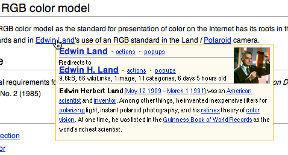
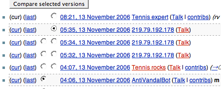

11.20.06
Posted in programming at 12:17 am by danvk
Can you figure out how this program does it?
#include <math.h>
#include <stdlib.h>
#include <stdio.h>
#include <time.h>
unsigned int gcd (unsigned int a, unsigned int b)
{
while (b) {
unsigned int c = b;
b = a % b;
a = c;
}
return a;
}
int main(int argc, char** argv) {
if (argc != 2) {
fprintf(stderr, "Usage: %s <sample size>\n", argv[0]);
exit(1);
}
unsigned int sample_size = atol(argv[1]);
unsigned int count = 0;
srand(time(NULL));
for (unsigned int i=0; i<sample_size; i++) {
unsigned int a = rand();
unsigned int b = rand();
if (gcd(a,b) == 1)
count++;
}
double pi = sqrt(6.0 * sample_size / count);
printf("%d: %.6f - %.6f = %.6f\n",
sample_size, pi, M_PI, fabs(pi-M_PI));
}
Convergence is pretty bad, probably O(sqrt(log N)), but it’s cool that it works!
| Input |
Runtime |
|Output-π| = Error |
| 1,000 |
0.001s |
|3.170213 – 3.141593| = 0.028620 |
| 10,000 |
0.003s |
|3.119420 – 3.141593| = 0.022173 |
| 100,000 |
0.025s |
|3.142490 – 3.141593| = 0.006862 |
| 1,000,000 |
0.243s |
|3.140774 – 3.141593| = 0.000818 |
| 10,000,000 |
2.427s |
|3.141377 – 3.141593| = 0.000216 |
| 100,000,000 |
24.256s |
|3.141756 – 3.141593| = 0.000164 |
| 1,000,000,000 |
242.518s |
|3.141692 – 3.141593| = 0.000099 |
(Thanks to C++2HTML for the syntax coloring)
Permalink
11.18.06
Posted in personal, tennis at 1:44 am by danvk
Tennis World #1 Roger Federer is playing World #2 Rafael Nadal in a few hours in the Masters Cup semifinals. I assume that Federer will win, but he has a history of bringing out the best in Nadal in a way that he doesn’t with anyone else. It should be a great match, but unfortunately, they’re playing in Shanghai, and no networks in the US are carrying it live. So I have to watch it rebroadcast at 7 PM PST on ESPN2.
I’m going to be really mad if I find out who won before the broadcast. Prime candidates for doing so:
- Gmail Web Clips. They’re great, but I had to remove ESPN.com from my set after it ruined two previous matches in this tournament for me.
- Wikipedia Watchlist. Not a conventional source of spoilers, but I had at least two late-round Wimbledon matches ruined this way. There’s going to be a flurry of activity on the Federer and Nadal articles today.
- Random web surfing. You just never know.
- Sports tickers. I’d like to watch the Michigan/OSU game, but I’m terrified.
So no email, wikipedia, web surfing or TV. Hopefully I’ll emerge from under my rock tomorrow in time for the match!
(And since when was Roger one of the sexiest men alive? He’s really not that attractive!)
Permalink
11.15.06
Posted in Uncategorized at 6:41 pm by danvk
I’m slowly developing an instinct to share any items I enjoy in Google Reader, but this means that I often find myself wanting to share an article from outside of Reader. I’ll stumble across a site, (usually from reddit or A&L Daily) enjoy an article, and want to share it. But I can’t, because I don’t subscribe to that random site’s RSS feed. Here’s a workaround:
- Add the “Subscribe…” link from Settings -> Goodies to your toolbar, or use this link: Subscribe… there.
- When you find an interesting story, click “Subscribe…”
- Find the article you want in the RSS feed and hit Shift-S to share it
- Close the tab/window. Don’t hit subscribe!
I haven’t found any other way to “preview” an RSS feed in Reader like this w/o subscribing. Here’s to a useful, obscure feature…
As always, you can subscribe to my shared items using the link on my Blogroll.
Permalink
11.14.06
Posted in programming at 1:06 am by danvk
The reasons that are typically mentioned for getting an account on Wikipedia are: 1) Your edits appear more reputable, 2) You can send/receive messages to/from other Wikipedians, and 3) You get a watchlist, which shows all recent edits to articles that interest you.
All of these reasons are geared towards writers, not readers. But there’s another reason for readers to register that I’ve never heard mentioned: registered users can add their own custom Javascript to Wikipedia pages. Why would anyone want to do this?
Reason #1: Navigation Popups Wikipedia encourages random browsing like no other site can. With Navigation Popups, you hover over a link and it shows a little preview of the article. Perfect for answering the “what on earth does that article look like?” question without disrupting your reading.

Once you start using Navigation Popups, there’s no going back. I often wish the rest of the web had these. For installation instructions, see Lupin’s instructions. The installation involves adding a single line to your User:/monobook.js page.
Reason #2: ISBNs When you click an ISBN on Wikipedia without an account, it takes you to a god-awful page listing every conceivable site you might be interested in. This is Wikipedia’s way of not picking sides. But I just want it to take me directly to Amazon. A user Javascript can do it. See this page for details.
Reason #3: Hacking! There’s nothing like being able to fix your annoyances on a site. One of my annoyances: while it’s obvious how to diff two specific edits with this interface:

It’s not at all obvious with this interface:

I know that clicking “7 Changes” will show me the diff of all those edits to the page, but I have no idea what the cur/last links do. So I hacked up a script to make it look like this:

Now it’s clear how to do the diff. To install this script, check out my monobook.js.
Permalink
11.12.06
Posted in personal at 4:07 pm by danvk
I’ve always loved documentaries, but in the past month I’ve begun to discover just how many good ones are freely available online. It all started with a reddit post linking to del.icio.us. Here’s the sources I’ve found so far:
My favorites so far:
Possibly the coolest thing about YouTube and Google Video is that playback in them Just Works. If you’re not using Windows, you’ll have some trouble with the PBS website. I had to use Flip4Mac WMV to view the Frontline episodes. I checked its “open in QuickTime Player” option, since I much prefer viewing in an application designed for that purpose than on a web page.
Permalink
« Previous Page — « Previous entries
Next entries » — Next Page »